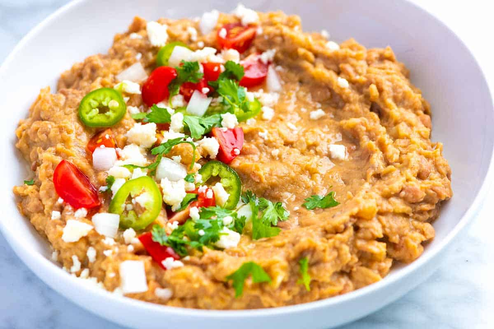

Refried Beans Recipe

Description
Refried beans is a dish of cooked and mashed beans that is a traditional staple of Mexican and Tex-Mex cuisine, although each cuisine has a different approach when making the dish.
Ingredients
- Olive Oil
- Chopped Onion
- Sea Salt
- 2 Cloves of Garlic
- Chili Powder
- 2 Cans of Pinto Beans
- Water
- Cilantro
- lime Juice
Steps
- In a medium saucepan over medium heat, warm the olive oil until shimmering. Add the onions and salt. Cook, stirring occasionally, until the onions have softened and are turning translucent, about 5 to 8 minutes.
- Add the garlic, chili powder and cumin. Cook, stirring constantly, until fragrant, about 30 seconds. Pour in the drained beans and water. Stir, cover and cook for 5 minutes.
- Reduce the heat to low and remove the lid. Use a potato masher or the back of a fork to mash up about at least half of the beans, until you reach your desired consistency. Continue to cook the beans, uncovered, stirring often, for 3 more minutes.
- Remove the saucepan from the heat and stir in the cilantro and lime juice. Taste, and add more salt and lime juice if necessary. If the beans seem dry, add a very small splash of water and stir to combine. Cover until you’re ready to serve.